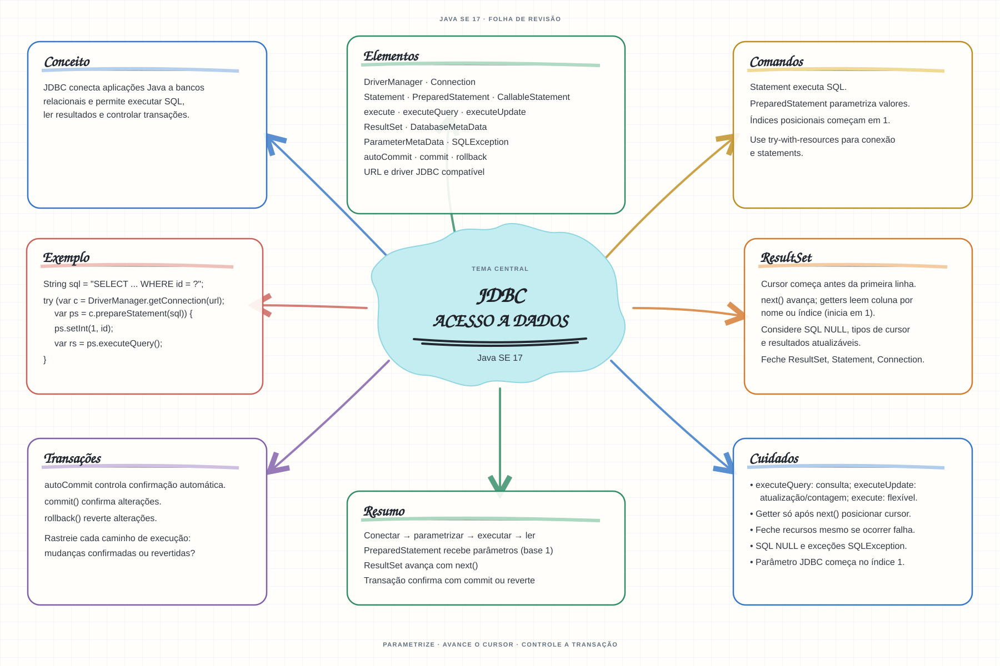

Escolha um assunto para abrir as notas de estudo. Os mapas mentais complementam o conteúdo como material de revisão.


Abrir mapa mental do capítuloMARCO DE CONCLUSÃO
Execute uma consulta parametrizada, percorra os resultados e confirme ou reverta uma transação.
Como este capítulo se relaciona com cada exame
1Z0-808 · Java 8
Conceitos JDBC podem ser úteis; confirme se estão no escopo do exame escolhido.
1Z0-829 · Java 17
Base de estudo deste portal; confirme o mapeamento com o blueprint vigente.
1Z0-830 · Java 21
Conceitos úteis; confirme driver, APIs e objetivos do exame Java 21.
Orientação editorial sobre reaproveitamento do material; não representa objetivos oficiais nem garante cobertura do exame. Consulte o comparativo e as fontes da Oracle.